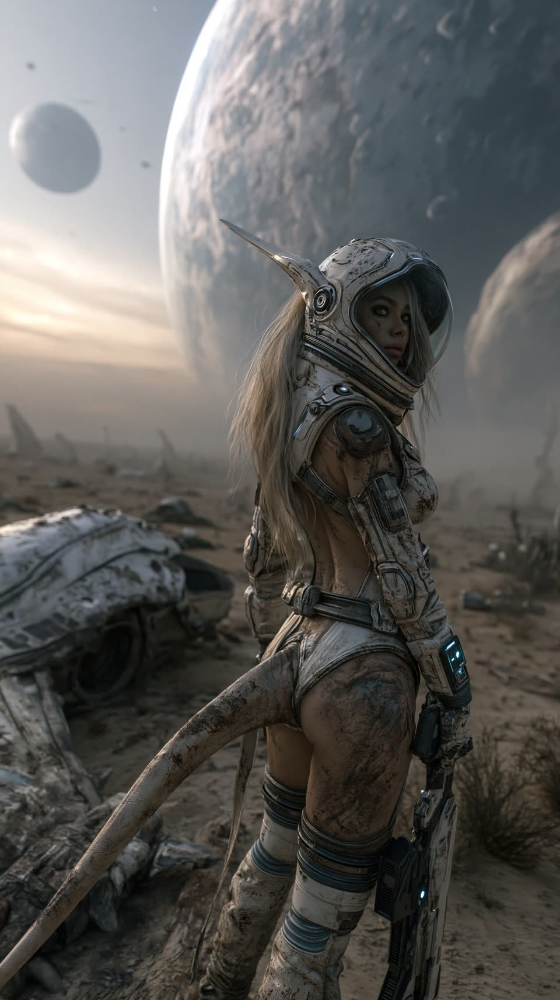

Bracketed-subject movie-still template with Kodak Vision3 500T and subtle film grain: lone space explorer by a crashed ship (Midjourney V8.2)
GRN-095Grain / FilterMidjourney V8.2by @92digitalartArt2026-11-21

A reusable film-still template: the subject goes in square brackets and the fixed look block follows (anamorphic lens, atmospheric haze, Kodak Vision3 500T, subtle film grain, rich cinematic colours, "no CGI, no illustration, no text"). Shown with a lone explorer on an alien desert with planets on the horizon. The post's parameters show Midjourney V8.2 syntax (--v 8.2 --hd) plus a personal --profile code, so results without that profile will differ.
Prompt
[A lone female space explorer in a weathered futuristic suit standing beside a crashed spacecraft on a vast alien desert, enormous planets on the horizon] ultra-photorealistic cinematic movie still, epic film photography, realistic characters, detailed costumes, anamorphic lens, dramatic natural lighting, atmospheric haze, Kodak Vision3 500T, subtle film grain, rich cinematic colors, realistic textures, Hollywood production quality, no CGI, no illustration, no text --ar 9:16 --hd --profile o4oz82a --v 8.2
Our Seedance 2.5 adaptation
[ADAPTED for Seedance 2.5 by Grok Bot; not the creator's prompt. Follows the official BytePlus Seedance 2.5 prompt guide and its official sd25-pe prompt-optimizer skill: parameters only on the API line (not in the prompt body), subject + action + scene, then visuals, camera (move, subject, start, direction, arrival) and sound; only the source's own exclusions are kept.] API: duration 6, ratio 9:16 (taken from the first frame), resolution 1080p (4k for a final), generate_audio true; first_frame = the GRN-095 still. 【Subject】The lone explorer exactly as in the first frame: weathered futuristic suit and helmet, standing beside the crashed spacecraft. 【Action】Wind pushes fine sand across the wreck and past her boots; she turns her head slowly towards the horizon and takes one step forward, then holds. 【Scene】The vast alien desert with the enormous planets on the horizon, unchanged. 【Camera】Low angle, very slow push-in from the full figure to a medium-wide; no cut. 【Visuals】Keep the film look of the frame: anamorphic lens character, atmospheric haze, Kodak Vision3 500T colour with subtle film grain, rich cinematic colours, realistic textures. 【Sound】Low desert wind, sand hiss against metal, a distant deep rumble.
Tags: Midjourney V8.2, Kodak Vision3 500T, subtle film grain, anamorphic, movie still, template, bracketed subject, --hd, --profile, sci-fi, image